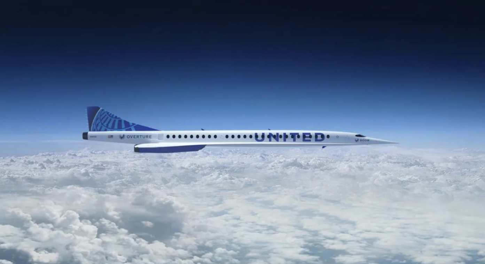

Return of supersonic commercial jets
In June 2021, United Airlines signed a deal with Boom Supersonic to procure 15 Overture supersonic jets, with the first passenger flight scheduled for 2029. [Reference]
The last time civilians were able to fly supersonic speeds for commercial air travel was in 2003, when the Concorde retired. While the Concorde was a commercial jet, it was heavily subsidized by the British and French governments due to its operational economics. The subsonic takeoff required after-burning engines with 215 percent higher fuel burn than in supersonic cruise! By contrast, subsonic high bypass turbofan engines of that era had 217 percent better fuel efficiency in cruise. The unoptimized aerodynamics and engine requirements limited the Concorde’s range to 3900 nm, constraining operations to transatlantic flights only.
There were plans for an improved B iteration of the Concorde, with morphing leading edges on the wings that could improve take-off lift/drag ratio by ~8 percent, removing the after-burner requirement. The improved aerodynamics and engine efficiency would have increased range by ~15 percent, allowing transpacific routes. However, the Concorde’s manufacturers were having difficulty selling the remainder of their original production run (with the UK and France subsidizing costs down to 1 GBP/1 Franc for the final five aircraft). An improved Concorde, with better operational dynamics, was never produced.
In the 50 years since the original Concorde aircraft was designed, there has been a myriad of improvements in aerospace engineering materials (composite structures, higher temperature alloys), computer-aided design, 3-D computational fluid dynamics simulations, electronics and software, and multi-disciplinary design optimization techniques. These gains lead to the next generation of high speed civil jets that are quieter and more efficient with commercially viable operational costs.